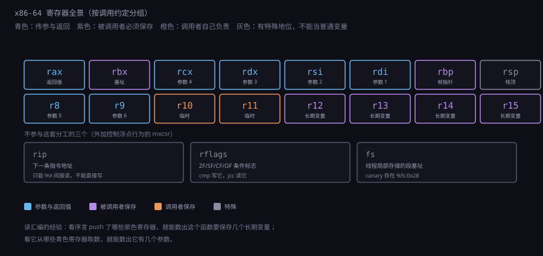
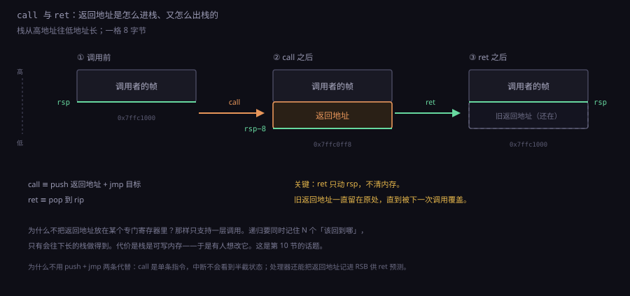
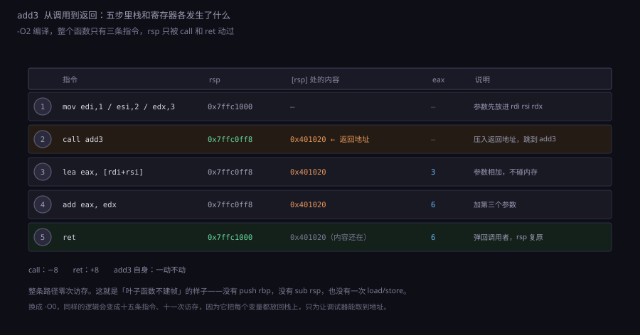
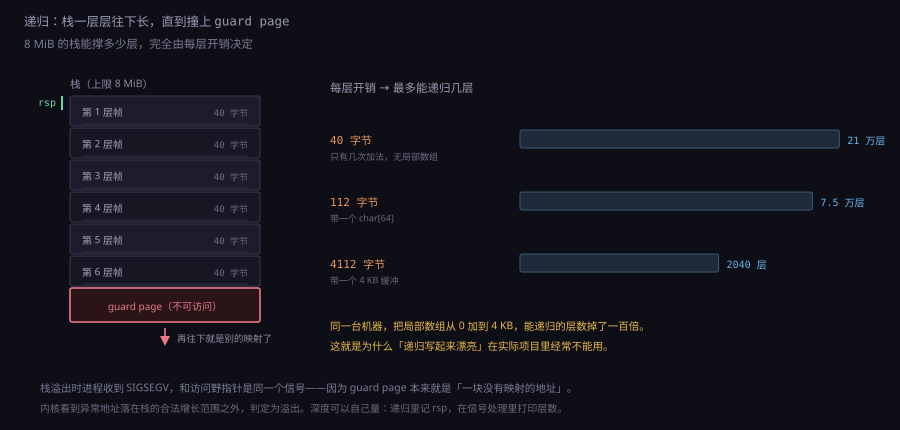
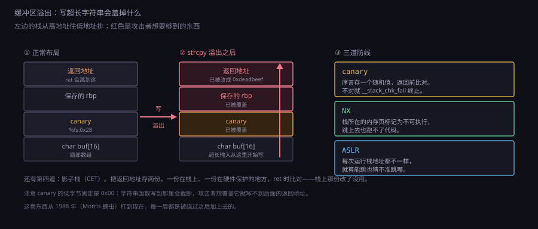
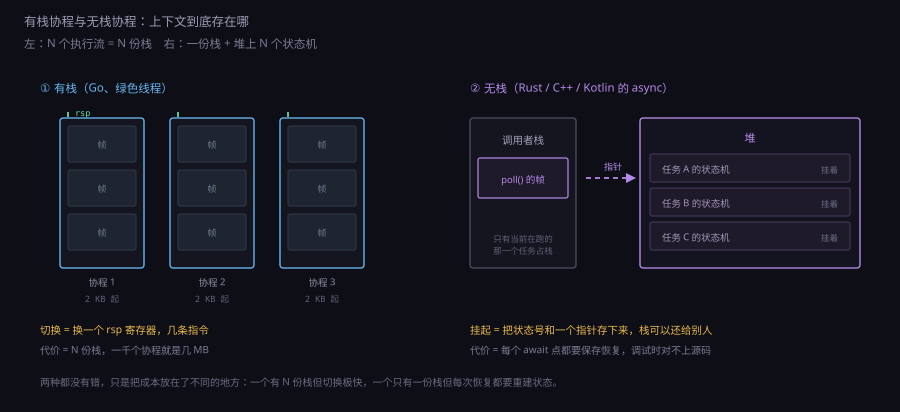

约 1.2 万字 · 6 张图 · 读完你能说清一次函数调用在硬件上留下了什么、 手算出递归多深会爆栈、并且明白 「栈溢出」为什么既是一个 bug 类别，也是一整类攻击的入口
先说一个容易被忽略的事实：寄存器的数量不是工程选择，是编码约束。 x86 的指令是变长的，寄存器号挤在 ModRM 字节里，只有 3 位， 所以只能表示 8 个寄存器；加了 REX 前缀再多 1 位，凑出 16 个。 ARM64 的指令定长 32 位，随手就能切出 5 位给每个寄存器字段， 于是有 31 个通用寄存器。这不是 ARM 更慷慨， 是它的指令格式留得出地方。
那为什么不干脆把指令做长一点，塞进 64 个寄存器？ 因为解读一条指令的代价会跟着涨。指令越长，取指带宽越浪费， 译码越复杂，缓存里能装的指令条数越少。 更要命的是寄存器堆本身：一个 64 位寄存器看着只有 8 字节， 但寄存器堆的面积不取决于容量，取决于端口数。 一条四发射的处理器每拍可能要读 8 个操作数、写 4 个结果， 这就是 12 个端口。端口数是面积和延迟的平方级因素， 32 个寄存器 12 端口已经是极限，64 个就做不进一个周期了。
| 存储 | 访问代价 | 容量 | 谁决定数量 | 典型用途 |
|---|---|---|---|---|
| 寄存器 | 0（在指令里直接寻址，无额外访问） | 16～32 个 | 指令编码位宽 | 参数、返回值、循环变量、正在算的中间结果 |
| L1 缓存 | 4 周期 | 32～64 KB | 工艺与功耗预算 | 最近用过的变量和指令 |
| 栈（在 L1 里时） | 4～5 周期 | 几 MB | 操作系统给的限额 | 局部变量、返回地址、溢出到栈的寄存器 |
| 栈（在内存里时） | 200 周期以上 | 几 MB | 同上 | 深递归的帧 |
于是编译器面对的是一个分配问题：把哪些变量留在寄存器里，哪些赶到栈上。 这个动作叫寄存器分配，主流做法是把它化成图着色问题—— 把「同时活着」的变量连成边，然后给图染色，颜色就是寄存器。 颜色不够用的时候，挑一个变量溢出（spill）到栈上， 用的时候 load 回来，算完 store 回去。
这也解释了一个日常现象：同一段 C 代码，
加上 -O2 之后常常快好几倍，而代码看起来没变。
很大一部分差距就来自寄存器分配——不开优化时，编译器几乎把所有局部变量
都老老实实放在栈上，每条语句都要 load 一遍、store 一遍；
开了优化，循环变量和累加器都待在寄存器里，一趟循环省掉十几次访存。
for (i = 0; i < n; i++) sum += a[i]; 的循环体，
不开优化时典型汇编是「load i、load sum、load a[i]、add、store sum、store i」六条访存加一条加法；
开优化后是「add、add、cmp、jne」四条，其中只有 a[i] 真的碰内存。
同样的算法，差出三倍，全在寄存器分配上。
寄存器堆的端口数为什么这么贵，值得算一笔具体的账。 一个 64 位寄存器是 64 个触发器，每个触发器要 6 个晶体管左右， 所以一个寄存器约 400 个晶体管，32 个就是 1.3 万—— 这点面积在今天的芯片上几乎不算什么。 但每加一个读端口，整个寄存器堆里每一个寄存器都要多一组读出电路 （位线、灵敏放大器、多路器），面积按「寄存器数 × 端口数」涨。 更要命的是延迟：位线越长、多路器越大，从给出寄存器号到数据稳定 需要的时间就越长。而这段时间直接压在每一级流水线的关键路径上。
所以真实处理器的做法是分层：架构上只暴露 16 或 31 个名字，
物理上却有一两百个寄存器（叫物理寄存器堆），
靠重命名把架构寄存器映射到物理寄存器上。
这样一条指令写 rax 时，实际写的是一个新的物理寄存器，
旧的 rax 还留着——这正是乱序执行和寄存器重命名的基础，
也是 1.3.5 要讲的内容。
「只有 16 个寄存器」是给程序员看的假象，芯片里远不止。
x86-64 有 16 个通用寄存器。所谓「通用」，只是说它们都能参与算术， 实际上在调用约定和指令集里，它们的分工差别很大。 名字的来源全是 16 位时代的遗留：那时候每个寄存器真的只干一件事。
| 寄存器 | 名字来历 | 当年的专职 | 今天在调用约定里的角色 |
|---|---|---|---|
rax | accumulator | 累加器，乘除法固定用它 | 返回值；caller-saved |
rbx | base | 基址寄存器，指向数据段 | callee-saved |
rcx | counter | 循环计数，移位量固定在 cl | 第 4 个参数（SysV）；caller-saved |
rdx | data | 乘除法的高位 / 余数 | 第 3 个参数；caller-saved |
rsi | source index | 串操作的源地址 | 第 2 个参数；caller-saved |
rdi | destination index | 串操作的目的地址 | 第 1 个参数；caller-saved |
rbp | base pointer | 栈帧基址 | callee-saved；可当帧指针 |
rsp | stack pointer | 栈顶 | 谁都不能随便动 |
r8～r11 | 64 位新增，无名字 | — | r8、r9 是第 5、6 个参数；全部 caller-saved |
r12～r15 | 同上 | — | callee-saved |
表里最后两列值得多看两眼。caller-saved 的意思是： 这个寄存器我调用别人时可能被改掉，如果我还需要它的值，得自己先存起来。 callee-saved 的意思是：被调用者用它之前必须先保存、 返回前恢复，保证调用者看到的值不变。
为什么不全设成 callee-saved，让被调用者一律保存？因为那意味着 每个函数开头都要把 15 个寄存器全存一遍，哪怕它一个都没用。 为什么不全设成 caller-saved？因为那样每个调用点都要把活着的变量全存一遍， 而循环里的调用点会反复执行。 折中的依据是使用频率：调用者通常比被调用者更清楚「哪些值我还需要」。
还有一批寄存器是隐式的，指令里根本不出现，但固定要用它。 这些叫隐式约束，是寄存器分配器最讨厌的东西：
mul rbx ; 隐含用 rax 做被乘数，结果高位放 rdx、低位放 rax
div rcx ; 隐含用 rdx:rax 做被除数，商进 rax，余数进 rdx
shl rax, cl ; 移位量必须在 cl 里，不能是任意寄存器
rep movsb ; 源地址 rsi、目的地址 rdi、次数 rcx，三个全是隐式的
syscall ; 系统调用号 rax，参数 rdi rsi rdx r10 r8 r9，返回 rax
loop label ; 计数固定用 rcx这些约束让 x86 的寄存器分配比 ARM64 难得多。 一段代码里如果同时有一个乘法和一个除法，它们会抢 rax 和 rdx， 编译器不得不在中间插入搬运指令。这是历史包袱的直接成本， 也是 x86 译码后要转成 μop 的原因之一——μop 里寄存器编号是自由的， 后端可以重新分配。
还有一个寄存器值得单独说：rsp。它是唯一一个
「不能随便改」的寄存器，因为栈的所有操作都隐含用它：
push 减 8 再写，pop 读再减 8 的反向，
call 压返回地址，ret 弹返回地址，
中断发生时硬件往它指向的地方压现场。
程序里唯一允许「批量改」它的地方是函数序言和尾声，
而且必须成对。
ARM64 那边干净得多：x0～x7 传参，
x0 返回，x8 传大结构体的间接结果指针，
x19～x28 是被调用者保存，
x29 是帧指针，x30 是链接寄存器（存返回地址）。
还有一个 xzr，读出来永远是 0，写进去丢掉——
它不占物理寄存器，是编码里的一个特殊编号。
除了这 16 个通用寄存器，x86-64 还有几组必须知道的：
| 寄存器组 | 数量与宽度 | 干什么 | 调用约定 |
|---|---|---|---|
rip | 1 个 64 位 | 下一条指令的地址 | 只能间接读，不能直接写 |
rflags | 1 个 64 位（实际用 20 多位） | ZF、SF、CF、OF 等条件标志 | caller-saved（返回值里可以带标志） |
xmm0～xmm15 | 16 个 128 位 | 浮点与 SIMD，同时是 ymm（256 位）/zmm（512 位）的低半部分 | 全部 caller-saved |
| 段寄存器 | cs ds ss es fs gs | 64 位模式下只剩 fs/gs 有用 | fs 指向线程局部存储 |
mxcsr | 1 个 32 位 | 浮点舍入模式、异常掩码 | caller-saved |
fs 这一项值得多看一眼，因为它就是 canary 和线程局部变量的落脚点。
64 位模式下段寄存器基本不用了，但 fs 还被留着指向一块
每线程独立的内存（TLS）。Linux 上的栈保护值就存在
%fs:0x28，每个线程一份，互不相同。
所以 canary 不只是「每进程随机」，而是「每线程随机」——
一个线程里泄露出来的值，在另一个线程里用不上。
而 rip 不能直接读这件事，写汇编时经常需要绕。
想拿到「当前指令的地址」，标准写法是
lea rax, [rip]——用 lea 做一次地址计算，
把 rip 的值当地址算出来。
位置无关代码（PIE）能工作，靠的也是这个：
编译器所有对全局变量的访问都写成 [rip+偏移]，
整块代码搬到内存任何地方都能跑，因为偏移是相对的。

调用约定（calling convention）是 ABI 里最硬的一部分。 它规定的不只是「参数放哪」，而是六件事：
| 规定的事 | SysV AMD64（Linux、macOS） | Windows x64 | ARM64（AAPCS64） |
|---|---|---|---|
| 整数参数 | rdi rsi rdx rcx r8 r9 | rcx rdx r8 r9 | x0～x7 |
| 浮点参数 | xmm0～xmm7，与整数分开计数 | xmm0～xmm3 | v0～v7 |
| 返回值 | rax / xmm0 | rax / xmm0 | x0 / v0 |
| 多出来的参数 | 从右往左压栈 | 从右往左压栈 | 压栈 |
| 调用者保存 | rax rcx rdx rsi rdi r8～r11 | rax rcx rdx r8～r11 | x0～x18 |
| 被调用者保存 | rbx rbp r12～r15 | rbx rbp rdi rsi r12～r15 | x19～x28 |
| 栈对齐 | 调用时 16 字节 | 调用时 16 字节 | 任何时候 16 字节 |
| 额外要求 | — | 调用者预留 32 字节 shadow space | — |
三列并排看，能看出两处设计分歧。
第一处是 Windows 只给了 4 个寄存器参数，SysV 给了 6 个。
原因很实际：Windows x64 的约定设计于 2000 年代初，
当时要兼顾 Itanium 和 x86 两条线，选了偏保守的方案。
代价是第 5 个参数就得压栈，而很多函数的参数正好是 5 个。
好处是 rcx rdx r8 r9 这四个位置固定，
调试器看一眼就知道参数在哪，不需要读符号信息。
第二处是那 32 字节的 shadow space（也叫 home space）。 Windows 要求调用者在栈上预留 32 字节，被调用者可以随便用； SysV 不要求。这个差别造成的 bug 极其隐蔽： 一段在 Linux 上跑得好好的汇编，搬到 Windows 上会把别的东西写坏， 而且坏的位置离出错的地方很远。
; Windows x64：调用者必须先腾出 32 字节
sub rsp, 40 ; 32 字节 shadow + 8 字节对齐修正
mov rcx, 1
mov rdx, 2
mov r8, 3
mov r9, 4
call add4
add rsp, 40
; SysV：不需要，直接调
mov rdi, 1
mov rsi, 2
mov rdx, 3
mov rcx, 4
call add4
参数超过寄存器数量之后，多出来的从右往左压栈。
「从右往左」不是随手定的：这样压完之后，第 7 个参数正好在
[rsp+8]（SysV，前 8 字节是返回地址），
第 8 个在 [rsp+16]，地址随参数序号递增，
被调用者算偏移很自然。
结构体怎么传，是三个约定分歧最大的地方。SysV 的规则是 「小于等于 16 字节、且字段能塞进整数或浮点寄存器」就拆成最多两个寄存器传； 更大或者字段类型不合适，就由调用者在自己的栈上分配空间、把地址当隐藏参数传进来。 ARM64 类似但上限是 16 字节、按 8 字节一组拆。 Windows 更严：只有 1、2、4、8 字节的结构体按值传，其余一律传指针。 这就是跨语言绑定必须手写胶水层的原因——同一份结构体声明，三个平台传法都不一样。
还有一个细节：可变参数函数调用时，SysV 要求
al 里放「这次调用用到了几个向量寄存器」。
因为 printf 这类函数要在不知道参数类型的情况下
把浮点参数从 xmm 搬到栈上，它得知道有几个。
忘记设 al 会导致浮点参数印出垃圾值——
这个坑在写汇编调 printf 时会实实在在地踩到。
压到栈上的参数，谁负责清理？这是 32 位时代留下的一个分歧点，
今天在 x86-64 上已经统一成调用者清理：
调用者知道自己压了几个参数，返回后一句
add rsp, N 收摊。
32 位时代有另一种做法叫 stdcall：被调用者在
ret 时顺手弹出参数（ret 8），
自己负责清理。Windows 的 API 当年用的就是它，好处是
代码体积小一点（清理指令只在被调用者里出现一次），
坏处是可变参数函数没法用——被调用者不知道有几个参数。
所以 printf 永远是 cdecl，
而 Windows 的那些 __stdcall 函数里，
只要带可变参数就必须单独声明成 __cdecl。
64 位统一之后，这堆前缀终于变成了历史。
参数放好了，接下来是「跳过去，并且记得怎么回来」。
这两件事 call 一条指令就做完了，它等价于：
call target ≡ push 下一条指令的地址
jmp target
ret ≡ pop 到 rip（也就是跳到栈顶那个地址）
为什么不用 push 加 jmp 两条指令代替？
有三个原因。第一，如果中间来了中断，
返回地址已经压栈但还没跳，现场就是半截状态；
call 作为单条指令，对这个窗口是原子的。
第二，处理器需要知道「这是一次调用」，
才能把返回地址记进内部的返回地址栈（RSB），
后面预测 ret 才有依据。
第三，现代处理器有影子栈（shadow stack）安全机制，
它监控的正是 call 和 ret 这对指令。
RSB 是一个不大的硬件栈，通常 16～32 项。
每次 call 压一项，每次 ret 弹一项，
于是 ret 的目标在绝大多数情况下能被完美预测——
返回本来就是「回到刚才那个地方」，用一个小栈记着就行。
但如果递归深度超过 RSB 容量，栈会绕回去，
ret 就预测错了，每次错都损失十几个周期。
这解释了一个反直觉的现象：极深的递归不只是内存问题，还有性能问题。

call 和 ret 对栈做了什么。左边是调用前，rsp 停在调用者的帧顶；中间是 call 之后，返回地址被压进去，rsp 减 8；右边是 ret 之后，返回地址被弹出，rsp 回到原处。整条链的关键在于：返回地址存在栈上，而不是存在某个专门的寄存器里。这个设计让递归成为可能——每进一层就多一份返回地址，天然支持任意深度；也让栈溢出成为一个安全问题——改掉栈上那个值，就能让函数返回时跳到任意地方。
顺带说一个 ARM64 的差别。ARM64 有一条 bl（branch with link），
它把返回地址放进 x30 而不是压栈。
只有被调用者自己还要再调别人时，才需要把 x30 存到栈上。
这让叶子函数完全不用碰内存：一次调用零次访存。
x86 做不到这一点，因为 call 无条件压栈。
这是 RISC 在调用开销上的一处结构性优势。
现在把栈竖起来看。栈从高地址往低地址长， 所以画图时习惯把地址大的放上面。 一个典型的 x86-64 帧，从上到下是这样几块：
| 位置 | 内容 | 谁写 | 什么时候写 |
|---|---|---|---|
| 高地址 | 调用者的帧 | 调用者 | 更早 |
| ↓ | 第 7、8… 个参数 | 调用者 | call 之前 |
| ↓ | 返回地址 | call 指令 | call 那一刻 |
| ↓ | 保存的 rbp | 被调用者的序言 | 进函数第一件事 |
| ↓ | 栈保护值（canary） | 序言 | 开了 -fstack-protector 时 |
| ↓ | 局部变量、临时空间 | 函数体 | 随时 |
| ↓ | 对齐填充 | 序言 | 凑够 16 的倍数 |
| 低地址 | 红区（128 字节，可不用） | 叶子函数 | 随时 |
至于栈为什么从高往低长，理由比想象中随意。
早期机器上堆从低地址往高地址长，两者相向而行，
中间剩下的就是可用空间，撞上就说明内存用完了。
这个安排被 PDP-11 定下来，之后的 Unix 和 x86 一路继承，
到今天也没改。x86 的 push 甚至专门为此设计：
「先减再写」比「先写再加」多一条微操作，
ARM64 的 stp 用 [sp, #-16]!
这种前索引写法表达同一件事。
没有任何技术上的必然性，纯粹是五十年前的一个选择。
前 6 个参数在寄存器里，第 7 个开始才占栈上位置。 返回地址下面那一格永远是被调用者的，所以函数序言几乎总是这两句：
push rbp ; 把调用者的帧指针存起来，rsp 减 8
mov rbp, rsp ; rbp 现在指向「保存的 rbp」这一格
; …… 函数体：用 rbp 的相对偏移访问参数和局部变量 ……
mov rsp, rbp ; 或者 leave（= mov rsp,rbp + pop rbp）
pop rbp
ret
为什么需要一个帧指针？因为 rsp 在函数执行过程中会变——
压栈、弹栈、给 alloca 腾地方，都会动它。
如果局部变量用 rsp 相对寻址，
每动一次栈就得重算所有偏移。rbp 在函数开头固定下来后就不动了，
所有访问都变成 [rbp-8]、[rbp-16] 这种常数偏移，
干净得多。而且 rbp 链让调试器能一路往上走，
把整条调用栈还原出来。
但今天绝大多数优化过的代码不用帧指针。
-fomit-frame-pointer 从 GCC 4.6 起在 -O1 以上默认开启，
于是多出 rbp 一个可用寄存器。
代价是调试器和性能分析器没法靠 rbp 链走栈了，
得靠 .eh_frame 里的 CFI 表——一张描述
「这条指令处 rsp 相对帧顶偏移多少、返回地址存在哪」的表。
现代 profiler 靠的是这张表，不是 rbp。这也是为什么
「编译时去掉帧指针会让 profiling 变难」这个说法在 2010 年后基本过时了。
帧大小在编译期就能定下来，所以几乎所有的函数序言都是一句
sub rsp, 常数。但有两种情况会打破这个前提：
alloca 和变长数组（VLA）。
alloca(n) 的语义是「在栈上分配 n 字节，
函数返回时自动回收」，n 是运行时才知道的。
编译器只能生成「算一下大小、对齐、减 rsp」这样的动态代码，
于是这一帧的大小在编译期未知。
这也是为什么 alloca 在很多编码规范里被禁用：
它的失败方式极其恶劣。分配失败时不会返回空指针，
而是直接把 rsp 撞进 guard page 或者别的映射里，
程序的行为无法预测；而且它在一个循环里调用会累积，
直到栈耗尽——不像 malloc 那样能检查返回值。
更麻烦的是它让编译器无法使用帧指针省略，
也让异常展开的 CFI 表变得复杂。
C99 的 VLA 有同样的问题，所以 C11 把它降成了可选特性。
纸上谈兵容易漏细节，走一个最小的例子。假设有这样一段 C：
int add3(int a, int b, int c) {
int t = a + b;
return t + c;
}
int caller(void) {
return add3(1, 2, 3) * 2;
}
不开优化（-O0）时，GCC 生成的 add3 是这样的：
add3:
push rbp
mov rbp, rsp
mov DWORD PTR [rbp-20], edi ; a 存到栈上
mov DWORD PTR [rbp-24], esi ; b
mov DWORD PTR [rbp-28], edx ; c
mov edx, DWORD PTR [rbp-20]
mov eax, DWORD PTR [rbp-24]
add eax, edx
mov DWORD PTR [rbp-4], eax ; t
mov edx, DWORD PTR [rbp-4]
mov eax, DWORD PTR [rbp-28]
add eax, edx
pop rbp
ret
十五行，做了三件事：把寄存器参数倒到栈上、
每算一次都从栈上读、结果放 eax。
这是 -O0 的典型风格：它几乎不做寄存器分配，
把每个变量都当成「有地址的东西」。
也正因为这样，调试时才能在 gdb 里
print &t 拿到一个有效地址。
开 -O2 之后，整个函数缩成三条：
add3:
lea eax, [rdi+rsi]
add eax, edx
ret
没有序言，没有尾声，没有一次访存。
参数就在 edi、esi、edx 里，
lea 顺手做了个加法（lea 本来是算地址的，
但它能同时做加法和移位，常被当成「不设标志的加法」用），
结果放进 eax，直接返回。
同一个函数，优化前后指令数差五倍，访存次数差十一次。
再看调用方。不开优化时，caller 的汇编是：
caller:
push rbp
mov rbp, rsp
sub rsp, 16 ; 腾出对齐空间
mov edx, 3 ; 第 3 个参数
mov esi, 2
mov edi, 1
call add3
add eax, eax ; *2
leave
ret
注意那句 sub rsp, 16。它看起来多余——
这个函数没有任何局部变量。但 ABI 要求 call 指令执行时
rsp 是 16 的倍数，而现在 rsp 已经因为
push rbp 减了 8，所以必须再减 8 凑回来。
16 而不是 8，是因为还要给可能的临时变量留地方，
编译器图省事直接减 16。

add3 执行时栈和寄存器的变化。-O2 版本只有三条指令，rsp 只在 call 和 ret 那一刻动过——这是「叶子函数不建帧」最纯粹的样子。三列数字值得一行行对：rsp 只在第 2 行减 8、第 5 行加 8，中间三行一动不动；[rsp] 那一格从头到尾都是同一个返回地址。到第 5 行，ret 把栈顶那个地址弹进 rip，rsp 回到 call 之前的值，被调用者在栈上留下的一切痕迹都消失了，栈恢复到调用前的样子，就像什么都没发生过。
这个例子还能说明一件常被误解的事：
「栈帧」不是硬件的概念，是软件约定。
处理器只知道 rsp 指向某处，push 减 8、
pop 加 8。什么算一帧、帧里放什么、rbp 该不该用，
全是编译器和 ABI 商量出来的。
这也意味着：一个函数如果自己算清楚了，完全可以不建帧、
甚至临时借用别人的帧——内联（inline）的本质就是这个。
有了这个例子，读陌生汇编就有了一套固定的入手方法。 拿到一段没有符号信息的机器码，先看三件事，能推出大半结构：
| 看到的特征 | 能推出什么 |
|---|---|
函数开头读了 edi、esi、edx | 至少有 3 个整数参数，且它们被用到了 |
开头有 mov [rbp-4], edi 这种「参数倒栈」 | 没开优化（-O0），这是它的签名 |
开头 push rbx / push r12 | 函数体里用到了被调用者保存寄存器，需要恢复 |
结尾 mov eax, ... 后直接 ret | 返回一个 32 位整数 |
结尾是 movsd xmm0, ... | 返回一个 double（或 float 用 movss） |
第一条就把 rdi 存起来，rax 最后等于它 | rdi 是隐藏的结构体返回指针，说明返回一个大对象 |
结尾是 jmp 而不是 ret | 尾调用，后面那个函数直接返回给它自己的调用者 |
中间有 call __stack_chk_fail | 开了栈保护，函数里有数组或 alloca |
这套方法在调试「没有源码的崩溃」时特别有用：
core dump 里只有寄存器和一段栈内存，
靠着 rsp 往上数、对照这些特征，
能大致还原出「崩在哪个函数、它收了几个参数、参数大概是什么」。
逆向工程的大部分时间就花在这件枯燥的事上。
因为每进一层函数就多一份帧，而栈的大小是有限的， 所以递归深度一定有上限。这个上限可以算出来， 算法只有一句：栈大小 ÷ 每层开销。
每层开销 = 帧大小 + 8（返回地址）。
帧大小在编译期就定了，看序言里的 sub rsp, N 就知道。
一个只做几次加法的递归函数，帧通常在 16～48 字节；
带一个 char buf[64] 就至少 64 字节往上。
| 场景 | 每层开销 | 栈上限 | 最多多少层 |
|---|---|---|---|
| Linux 主线程，极小帧 | 40 字节 | 8 MiB | 约 21 万层 |
| Linux 主线程，带 64 字节数组 | 112 字节 | 8 MiB | 约 7.5 万层 |
| Linux 主线程，带 4 KB 缓冲 | 4112 字节 | 8 MiB | 约 2000 层 |
| Windows 主线程，极小帧 | 40 字节 | 1 MiB | 约 2.6 万层 |
| 内核栈 | — | 16 KiB | 个位数到几十层 |
| goroutine 初始栈 | — | 2 KiB 起步，可增长到 1 GiB | 增长时整体搬家 |
这些数字解释了为什么「递归写起来漂亮」在实践中经常不能用。 一个递归下降的 JSON 解析器，遇到一个几千层嵌套的数组就得崩； 一个按节点递归的树遍历，遇到一条链状结构（不是树，是链表）就线性涨栈。 攻击者非常清楚这一点：构造一个深层嵌套的输入，就能让服务端栈溢出。 这类攻击叫「栈耗尽」，它不属于缓冲区溢出，不需要写坏任何字节， 只需要让程序自己把栈用光。

SIGSEGV，进程死掉，这就是「栈溢出」。右边那三组数字是同一台 8 MiB 机器上的三种情况：帧里多一个 char[64]，能递归的层数就从 21 万掉到 7.5 万；多一个 4 KB 缓冲，直接掉到两千。溢出不是渐进过程，是一次突然的撞墙——撞上前一纳秒程序还好好的。
为什么主线程栈是 8 MiB 这个奇怪的数字？因为它是个经验值。
1980 年代的 Unix 给 512 KB 就够，后来程序越写越深，
一路涨到 8 MB 就停住了——再大就开始浪费地址空间
（每个线程一份，一千个线程就是 8 GB 虚拟地址）。
这个值可以用 ulimit -s 改，也可以在链接时指定。
栈溢出时进程收到的信号，和访问野指针收到的是同一个：
SIGSEGV。原因在于 guard page 本质上就是
「一块没有映射的地址」，访问它和访问任何非法地址没有区别。
内核看到异常地址落在栈的合法增长范围之外，就判定为栈溢出。
上面那张表里的数字都可以自己量出来，办法很土：
写一个一直往下递归的函数，每层把 rsp 记下来，
然后在 SIGSEGV 的信号处理里打印深度。
#include <signal.h>
#include <stdio.h>
static volatile int depth = 0;
static void *lowest = 0;
void crash(int sig) {
printf("深度 %d，栈底附近 %p\n", depth, lowest);
_exit(0);
}
void dive(int n) {
char pad[64]; /* 控制每层开销 */
pad[0] = (char)n;
depth = n;
lowest = pad; /* 每层比上一层低，最后一层最低 */
dive(n + 1); /* 编译器会优化成循环，要禁掉尾调用 */
}
int main(void) {
signal(SIGSEGV, crash);
dive(1);
return 0;
}
用 gcc -O0 -fno-optimize-sibling-calls 编译，跑出来的深度
就是「8 MiB ÷ 每层开销」。
这里必须加 -fno-optimize-sibling-calls，
否则编译器一看这是个尾调用，直接改成循环，
深度能涨到无穷——这正好从反面印证了上一节讲的尾调用优化有多彻底。
既然建帧有成本，编译器当然会想办法省。 省的方式有三层，一层比一层激进。
第一层：叶子函数不建帧。
所谓叶子函数，就是函数体里没有任何 call。
它不需要保存 rbp（因为不会有更深的帧需要它），
也不需要动 rsp（局部变量可以放在红区里）。
于是整个序言和尾声都消失了，前面 add3 那个三条指令的版本就是。
第二层：红区。
SysV ABI 规定 rsp 以下 128 字节是「红区」，
信号处理和中断处理程序必须保证不覆盖它。
于是一个叶子函数可以在完全不改 rsp 的情况下，
用 [rsp-8] 到 [rsp-128] 这块内存当临时空间。
这一手把「建帧」的成本压到了零。
但要注意：红区只在用户态有效。内核代码不能用，
因为中断随时可能来，而中断处理会用自己的栈往下压。
Windows 也没有红区这个概念，它的 ABI 里 rsp 以下的空间随时可能被用掉。
第三层：尾调用。
如果一个函数的最后一个动作是「调用别人然后直接返回结果」，
那它自己的帧在调用之后就没用了。聪明的编译器会把
call 换成 jmp：直接把参数改好，
然后跳过去，让被调用者复用当前这层帧。
调用链不会变长，栈也就不会增长。
; 尾调用前
int f(int n) { return g(n + 1); }
f:
sub rsp, 8
add edi, 1
call g
add rsp, 8
ret
; 尾调用优化后
f:
add edi, 1
jmp g ; 不压返回地址，g 直接返回给 f 的调用者
这一步的意义远超省几条指令。它把「递归」变成了「循环」：
一个写成尾递归的函数，无论递归多深都只占一层栈。
Scheme 的语言规范里明文要求实现必须做这个优化，
因为函数式编程大量依赖尾递归来表达循环。
C 和 C++ 不保证——GCC 和 Clang 在 -O2 下通常会做，
但一旦函数里有析构、有 alloca、或者返回值需要额外处理，就不做了。
这也是「写递归但不怕深」的唯一正路： 把递归改写成尾递归，或者手动改成循环加一个显式栈。 后者在解析器里很常见——把递归下降改成用数组模拟的栈， 栈就能放在堆上，想多深有多深。
栈的底端有一页（4 KB）内存被标记为不可访问，叫 guard page。 它不是用来拦溢出的——溢出时早就写坏东西了——而是用来 触发一次异常，让内核有机会判断「这是不是栈在正常增长」。
这个机制比想象中微妙。Linux 的做法是：
栈的 vma（虚拟内存区域）有一个标志 VM_GROWSDOWN，
当访问的地址落在 rsp 下方一定范围内时，
内核不报错，而是把栈的边界往下扩一页，然后重新执行那条指令。
这样栈就能按需增长，不用一开始就占满 8 MB 物理内存。
如果访问的地址离 rsp 太远（超过一个 rlimit 值），
内核就认为这不是栈增长，直接 SIGSEGV。
这个「太远」的判断引出了一类漏洞。
如果一个函数一次就把 rsp 往下移很多
（比如 alloca(1MB) 或者一个 1 MB 的局部数组），
然后往上写数据，它会跳过 guard page，
直接落到栈下方的另一块映射里（比如堆、或者另一个线程的栈），
把那里写坏。
这类问题叫 Stack Clash，2017 年一次性影响了几乎所有 Unix。
修法是编译器在栈上分配大空间时插入栈探测：
每 4 KB 摸一下，逼内核逐页扩栈。
; 编译器插入的栈探测（简化）
sub rsp, 1048576
mov QWORD PTR [rsp], 0 ; 摸第一页
mov QWORD PTR [rsp+4096], 0 ; 每 4KB 摸一次
...
; 每一摸都会触发缺页，内核确认是栈增长后扩一页
Windows 把这件事做成了显式约定：任何超过 4 KB 的栈分配都必须调用
_chkstk，由它逐页触碰一遍。这不是可选的优化，
是 ABI 的一部分——不调就会在 guard page 之外写数据，
而且错误现场极难定位。
再往上，栈的顶端还有一个容易被忽略的限制： 内核栈很小。Linux 的内核栈是 16 KB（x86-64）， Windows 是 12 KB 起。在这么小的栈上写递归是自杀行为—— 一个递归深度 100 的文件系统遍历就能把内核栈打穿， 而死机的现象是随机的，因为栈下面压着别的内核数据结构。 这就是为什么内核代码里几乎见不到递归，全是显式栈和循环。
还有一个有趣的边界情形：栈已经溢出了，怎么还能执行信号处理函数？
信号处理的代码本身也要用栈，如果栈已经没地方了，
处理函数一进去就再撞一次——于是内核在发 SIGSEGV 之前，
先看这个信号有没有注册独立信号栈（sigaltstack）。
注册过就切到那块内存去执行处理函数，没注册就继续在已经爆掉的栈上执行，
结果通常是二次崩溃、什么信息都拿不到。
写得严谨的程序在启动时都会给 SIGSEGV 配一块 8 KB 的独立栈，
就是为了让栈溢出这个错误至少能被报出来。
前面说过：返回地址存在栈上。这是图 2 里那个设计决定的直接后果。 它带来递归的便利，也带来一整类安全问题。
最经典的场景是这个：
void greet(const char *name) {
char buf[16];
strcpy(buf, name); // 不检查长度
printf("hello, %s\n", buf);
}
buf 只有 16 字节，如果 name 有 40 字节，
strcpy 会一路往上写，先覆盖对齐填充，
再覆盖保存的 rbp，最后覆盖返回地址。
函数返回时 ret 从这个位置弹出地址跳过去——
于是控制流就落到了攻击者指定的地方。

rbp 和返回地址。中间是溢出发生时的样子：写超长的字符串会从数组一路往上盖，最先撞上的是 canary——它就是一个为了让攻击者必须踩到的诱饵。右边是三道防线：canary 在返回前比对，值不对就 __stack_chk_fail 直接终止；NX 让栈内存不可执行，跳上去也跑不了代码；ASLR 让地址随机，猜不准跳哪。三道叠起来，才让这个 1988 年就出现的攻击手法在今天不那么好用。对抗手段是逐层加上去的，每一层都对应攻击者的一个具体困难。
| 防线 | 拦住的困难 | 绕过的办法 | 年代 |
|---|---|---|---|
| 栈不可执行（NX） | 跳到栈上执行自己写的代码 | return-to-libc：跳到已有的库函数 | 1996 起 |
| 栈保护值（canary） | 悄悄改掉返回地址 | 先泄露 canary 的值再写 | 1998 |
| 地址随机化（ASLR） | 知道该跳到哪个地址 | 先泄露一个地址，算出基址 | 2001 |
| ROP | （这是攻击）用已有代码片段拼出任意逻辑 | — | 2007 |
| 影子栈（CET） | ROP 改返回地址 | 难，需要硬件漏洞配合 | 2020 起 |
canary 的细节值得一看，因为它体现了「用很小的成本换很大的阻力」这个思路。
函数序言从 %fs:0x28 读一个随机值存到栈上，
尾声再读一次比对。它的低位字节固定是 0x00，
因为早期的溢出多是用字符串函数做的，
0x00 会截断字符串——攻击者想覆盖它，
写进去的字符串就会提前结束。
这个设计很取巧：它不阻止覆盖，只是让覆盖变得必须精确。
影子栈是另一条路：把返回地址存两份，一份在栈上、一份在硬件保护的另一个地方，
ret 时比对。栈上那份改了没用，因为对照的那份改不了。
这从根本上解决了「返回地址可写」这个问题，
代价是要多一片内存、多一套页表保护，每次调用返回都要多一次比较。
顺便说一个容易混的点：栈溢出（stack overflow）和
缓冲区溢出（buffer overflow）不是一回事。
前者是栈用光了，程序自己崩；后者是栈上的数组越界写，
改掉了不该改的数据。前者是资源问题，后者是正确性问题。
但因为两者都会表现成 SIGSEGV，报错信息里都写
「stack smashing detected」或者「segmentation fault」，
排查时经常要看到现场才能分清。
返回地址当然不是栈上唯一值得改的东西。 一个攻击者真正关心的目标有一串：
| 栈上的东西 | 改掉之后能做什么 | 为什么可能比改返回地址更划算 |
|---|---|---|
| 返回地址 | 直接改变控制流 | 最直接，但 canary 和影子栈都盯着它 |
保存的 rbp | 让 leave 把 rsp 搬到别处 | 可以精确控制下一帧的位置，配合 ret 做链式跳转 |
| 函数指针变量 | 调用时跳到任意地址 | 很多程序把它放在栈上的结构体里，canary 管不到 |
| C++ 对象的虚表指针 | 虚函数调用时跳到任意地址 | 对象如果在栈上，虚表指针就跟着在栈上 |
| 异常处理对象 | 异常抛出时跳到别的处理块 | 展开过程复杂，检查点比返回地址少 |
| 局部布尔 / 长度变量 | 绕过权限检查 | 不需要执行代码，改一个值就够了 |
最后那一行最值得警惕：不是所有攻击都要执行代码。
一个 if (authenticated) {...} 里的布尔量如果和缓冲区相邻，
改掉它一个字节就完成了提权，根本不需要 ROP。
这也是为什么现代编译器的栈布局会把数组和标量分开摆放，
把 canary 放在数组和返回地址之间——
它防的不只是「跳到别处」，更是「精确地改掉某一个小变量」。
调用约定是合同：编译器按它生成代码， 链接器和加载器按它拼装，任何一方理解错了，程序就崩。 而这类错误的特点是——崩的地方和错的地方隔得很远。
最常见的三种踩法。
一、栈对齐没做对。
SSE 的 movaps 指令要求地址 16 字节对齐，
不对齐直接抛 SIGSEGV。
如果一个手写的汇编函数在 call 时让 rsp 停在
「16 的倍数加 8」的位置，那么被调用的 C 函数里第一条
movaps 就会炸——报错位置在某个完全无关的库函数里，
而且只在某些输入下出现（因为只有那条路径才会走到 movaps）。
这个 bug 的排查时间通常以天计。
二、Windows 上没留 shadow space。
前面说过那 32 字节。call 之前如果没 sub rsp, 32，
被调用者一进来就会把四个参数寄存器写进它以为属于自己的那 32 字节里，
而那实际上是调用者的局部变量区。写坏的是调用者的数据，
但发现问题的时机可能是几百行之后。
三、浮点参数的个数没填。
SysV 下调用可变参数函数前要把「用了几个向量寄存器」放进 al。
忘了填，printf("%f", 3.14) 会印出 0.000000
或者一串垃圾。因为 printf 按 al 的值决定
要从 xmm 区搬几个参数到栈上，
al 是 0 就一个都不搬。
还有一个系统调用层面的差异值得单独记住：
syscall 用的是另一套约定。
Linux 的 syscall 指令固定用
rax 放调用号、rdi rsi rdx r10 r8 r9 放参数，
返回在 rax。
注意第 4 个参数是 r10 而不是 rcx——
因为 syscall 指令自己要用 rcx 存返回地址，
用 r11 存标志位。
这条规定完全是硬件实现逼出来的，和 C 的调用约定没有任何关系。
这些差异加起来，就是「跨语言调用必须写胶水层」的原因。
Rust 的 #[repr(C)]、Python 的 ctypes、
Java 的 JNI，本质上都在做同一件事：
把一门语言的内存布局和调用约定，翻译成另一门语言能接受的形式。
这不是工程上的偷懒，是因为约定本身没有唯一正确答案，
每个平台都按自己的历史选了不同的路。
从 C 往上看，寄存器和栈这套东西被一层层藏起来，但从来没消失。 每一种高级语言的运行时，都要回答同一个问题： 函数调用时的上下文存在哪。
| 语言机制 | 上下文存在哪 | 和栈的关系 |
|---|---|---|
| 普通局部变量 | 寄存器，不够就栈 | 直接用硬件栈 |
| 逃逸的局部变量 | 堆 | 编译器发现地址被传出函数，改放堆上 |
| 闭包 | 堆上的环境对象 | 捕获的变量整体搬到堆，指针存在栈上 |
| 有栈协程（goroutine） | 自己一片可增长的栈 | 切换时只换 rsp，不换别的 |
| 无栈协程（async/await） | 堆上的状态机 | 编译器把函数改写成状态机，栈上只留当前状态号 |
| 异常 | 靠 CFI 表逐帧展开 | 不靠 rbp 链，靠 .eh_frame 里的描述 |
「有栈协程」和「无栈协程」的差别，本质上就是 要不要给每个执行流一份独立的栈。 Go 选了要：每个 goroutine 起始只有 2 KB 栈， 不够用时分配一块大一倍的、把内容搬过去、改掉所有指向旧栈的指针。 这个「栈搬家」的代价是：Go 的指针不能随便取地址传给 C， 因为地址随时可能变。

rsp，代价是 N 个协程就有 N 份栈空间——虽然每份很小，但一千个协程仍要几 MB。右边是无栈（Rust、C++、Kotlin 的 async）：所有任务共用调用者的栈，每个挂起的任务在堆上有一个状态机对象，跨 await 的局部变量被搬进这个对象，栈上只留一个指针。左边切换便宜、内存贵；右边内存便宜、每步都要保存恢复状态。
Rust 和 C++ 的 async 选了不要：编译器把
async fn 改写成一台状态机，所有跨 await
的局部变量都被搬进这个状态机的结构体里，放在堆上（或者调用者的栈上）。
于是「挂起」只需要记一个状态号，恢复就是再调一次
poll。代价是每个 await 点都要保存和恢复一堆状态，
编译出来的代码比手写的大，而且调试时看到的东西和源码对不上。
这两种选择的取舍，其实和 1.3.2 讲的「单周期 vs 流水线」是同一个味道： 你要为「随时能切换」付出多少常驻成本。
再往下还有一层：解释器和 JIT。
CPython 的执行模型里，Python 函数调用会创建一个
PyFrameObject——一个堆上的对象，
装着局部变量、指令指针、值栈。
所以 Python 的递归限制（默认 1000 层）和栈大小几乎无关，
它是解释器自己设的一道闸，为的是不让 C 层的递归把真实栈打穿
（每个 Python 调用在 C 层也要占几层帧）。
调 sys.setrecursionlimit(100000) 之后真能跑更深的递归，
但代价是可能直接把进程崩掉——因为限制被解除的只是那道闸，
C 栈的限制还在。
JIT 则把这件事又翻回来了。V8 这类引擎会在热函数上做内联缓存、
内联小函数、省略帧，让访问局部变量几乎和 C 一样快；
一旦遇到类型不匹配（deopt），它要能把这个函数的
寄存器状态和栈状态重建成解释器能理解的样子再继续。
这要求 JIT 在每一条可能出错的指令位置都保留一份「状态映射」，
说明「此刻 rax 对应源码里的哪个变量」。
听起来耳熟吗？这就是 CFI 表的另一种形式。
所以从汇编到 Go、到 async、到 JIT，这套东西一直在被重新发明： 只要有「调用」这件事，就必须回答「上下文存在哪、怎么找回来」。 寄存器放得下就用寄存器，放不下就上栈，栈不够就上堆， 堆上的东西还要能被找到——每一层都是同一个问题的不同解法。
最后回到本节开头那个对比：寄存器快但少，栈慢但多。
函数调用这件事，本质上是在两者之间搬运上下文：
把要用的东西塞进少数几个快的地方，把不用的、要留到回来再用的东西
推到慢的地方存着。每一次 push、每一次 spill、
每一次建帧，都是这个搬运的一次动作。
理解了这一点，很多性能问题就有了统一的解释：
为什么内联有用（省掉一次搬运），
为什么虚函数慢（要经过指针跳转，且难以内联），
为什么尾调用优化重要（可以让搬运次数与深度无关）。
下一节讲流水线：既然每条指令都要走这四步， 为什么不让四条指令的四步叠起来走。 那会带来一整套新问题——数据依赖、控制依赖， 以及「猜错了怎么办」。整个 1.3.4 都在回答这个「怎么办」。
call 不直接用 push 加 jmp 代替？说出三条理由。rbp 有什么用？为什么现代编译器默认不用它？不用它之后调试器怎么走栈？